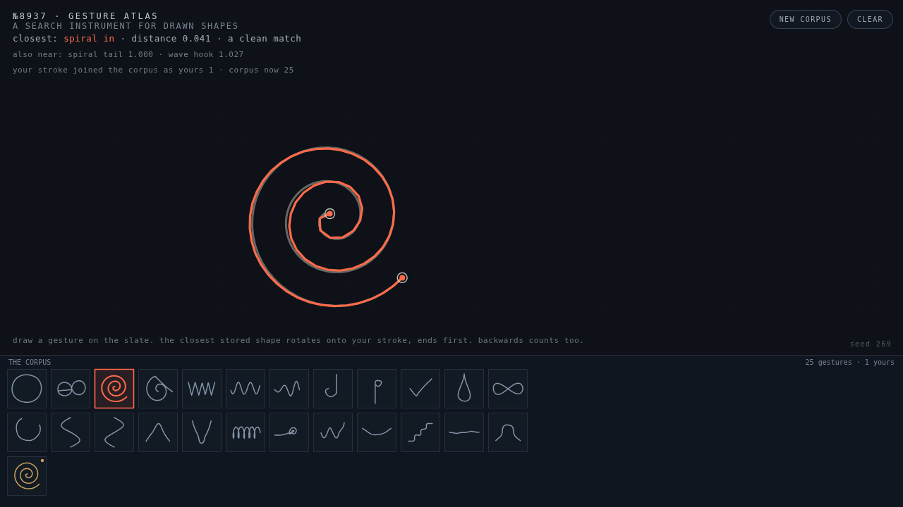
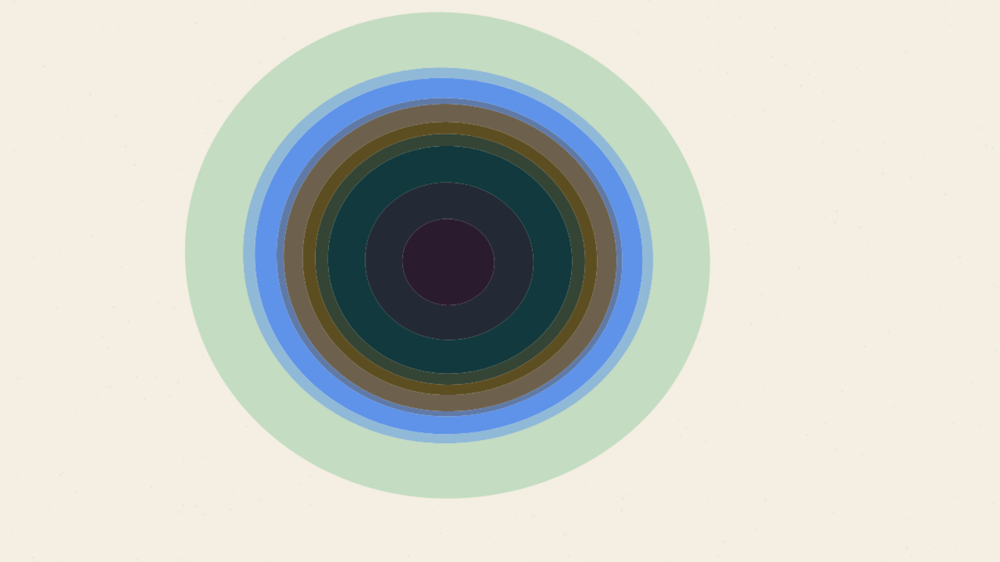
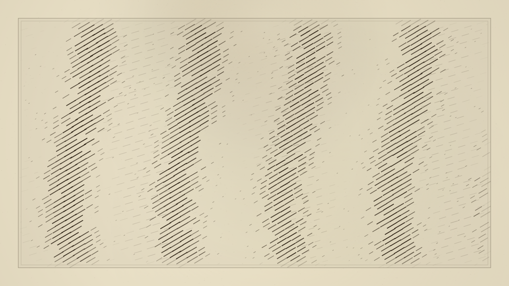
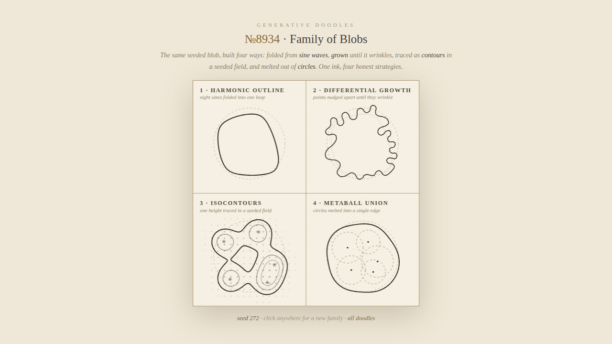
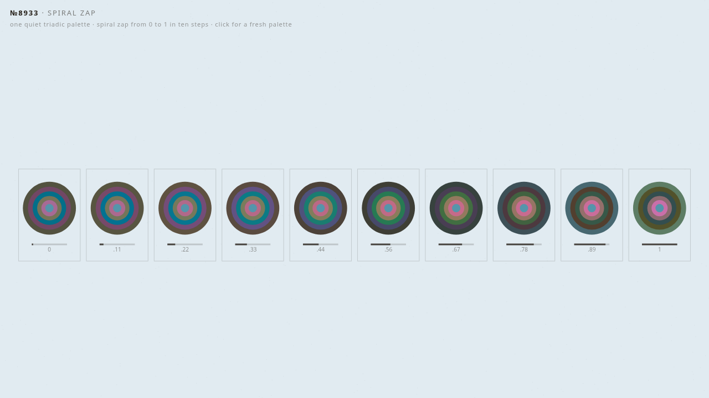

A daily practice in generative art. Small programs, drawn live in your browser.

Draw a stroke and the atlas finds its nearest cousin in the corpus, snapping it under your hand. Endpoints count most.

Every visit rolls a fresh Hue Bingo palette and lays it down as wobbling colour rings. Coherent by construction.

A hatch field where a sine wave decides how long each dash gets. Blades of darkness swim through the lines.

The same blob built four ways: harmonic, grown, contoured, implicit. One ink, one plate, the comparison is the picture.

One quiet triadic palette spiralled ten times, calm on the left and feral on the right. The tipping point is visible.